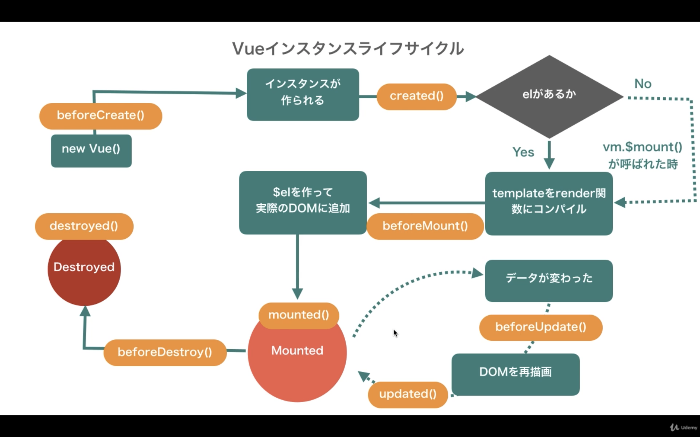

Vue.js勉強用メモ（インスタンスまとめ）
外部からVueインスタンスのプロパティを変更する場合は、宣言時に変数として宣言する。
外部でVueインスタンスにないプロパティを追加しても表示することはできるが、プロパティの値を動的に変更できなくなる（リアクティブにならない）。
=> Vueの仕組みとして、Vueインスタンス内のデータを先に参照し、getterやsetterを定義した上で処理を行う為、外側で追加されたプロパティに関してはgetterやsetterが定義されず、リアクティブにならない。
外部で定義した変数をVueインスタンス内で呼び出すことはできる。その場合はリアクティブになる。
ユーザー定義のプロパティ以外にも、Vueインスタンスがデフォルトで持つプロパティやメソッドはたくさんあり、区別するためにプレフィックスで$が付いていて、公式サイトで確認できる。
レンダリング関数のcreateElementでは、DOMを作っているわけではなく、Vueが仮想DOMを作るための情報（仮想DOMのための仮想ノード）を返しているだけ。
templateプロパティでも、他のプロパティでも最終的にはレンダリング関数の処理を経て情報を渡し、VueがDOMを作っている。
仮想DOMとは？ => DOMの形を模したJavascriptのオブジェクト
Vueが仮想DOMを作るのはなぜ？ => DOMを直接変更すると時間がかかり、パフォーマンスが落ちるため！仮想DOMを使って、変更前との差分を確認することで効率よく処理ができるようになる。
複数のDOMがあるページで、ボタンをクリックすると一部のDOMが切り替わるケースで考えてみる。
DOMを直接操作する： 変更がないDOMにもアクセスする必要があり、効率が悪い。
仮想DOMがある： 最初のページのDOMを保持しておき、ボタンがクリックされた後に、レンダリング関数で変更後のページの仮想DOMをVueへ渡す。
変更前のページとの仮想DOMの差分を確認し、変更箇所のDOMを特定してそのDOMだけにアクセスするため効率的！
componentは定義した場所より下のインスタンスで利用可能になるため、定義する場所に注意！定義すると、タグとして呼び出すだけで中の処理が行われる。
{{ message }}
